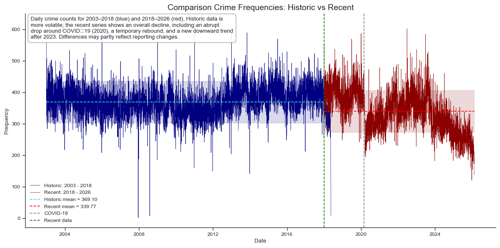
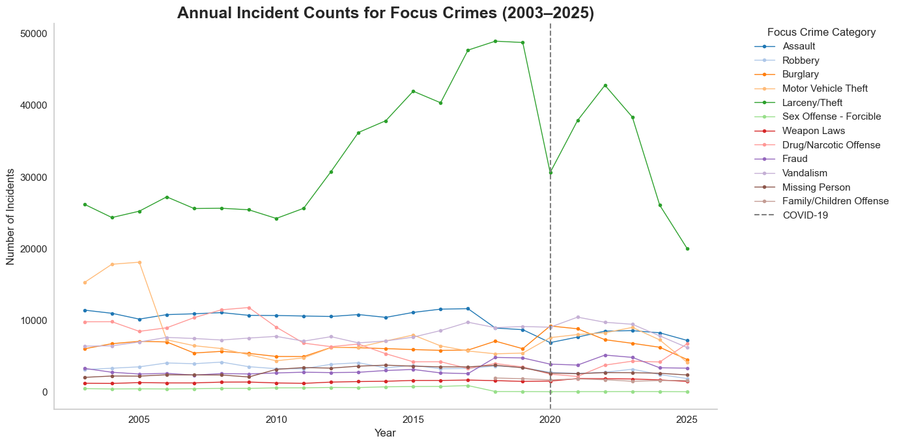

How We Collected and Organized the Crime Information
The analysis is based off publicly available information from Public Safety section on the San Francisco Open Data Portal, where the data "Police Department Incident Reports Historical 2003 to May 2018" and "Police Department Incident Report: 2018 to Present" can be found.

The overall decline is real, but it is driven mostly by a few large categories
Looking first at annual totals helps establish the broad story. The most important point is that property crime, especially larceny and theft, dominates the overall volume, which means changes in these categories shape the citywide trend more than smaller categories do.
The overall decline is real, but it is driven mostly by a few large categories
Looking first at annual totals helps establish the broad story. The most important point is that property crime, especially larceny and theft, dominates the overall volume, which means changes in these categories shape the citywide trend more than smaller categories do.

Citywide averages hide strong geographic concentration
The geographical representation of assaults in neighborhoods helps clearly spreading awareness, in which parts of the city precautions should be taken. This map tells the story of "Where crime is concentrated" rather than "how much crime", showing clear focus areas instead of a numerical increase or decrease.
The timing of crime adds another layer to the story
After seeing the long-run decline and the spatial concentration, the final figure lets the reader interact with one more dimension: time of day. This figure is here to deepen the story, not to restart it. The point is that crime is patterned in time as well as in place.
One story, three views
The citywide trend suggests improvement, but the broader picture is more uneven. The decline is shaped mainly by a few dominant crime categories, the burden of crime remains geographically concentrated, and daily timing patterns reveal that incidents are structured rather than random.
That is the main takeaway of this page: crime in San Francisco declined overall, but understanding that change requires looking beyond one aggregate number.
Sources
- San Francisco Open Data Portal — police incident data.
- Add any external sources here that help explain spikes, declines, or neighborhood patterns.
- Add one or two supporting references if you discuss policy changes, COVID effects, or local context.